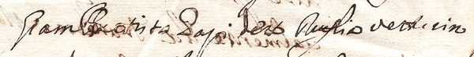

|
- PROCESSI E FATTI CURIOSI CHE RIGUARDANO I FANTINI -
|
|

Grazie al contributo del sig. Antonio Canne, adesso sappiamo che
il soprannome del fantino che fece cappotto nel 1713 era Ruglia e non Roglia; inoltre si chiamava Giovan Battista Papi, nome che è sempre stato attribuito a
Ignudo Tutto questo compare in un inserto matrimoniale del 1719 che riporta pure la morte del Papi, avvenuta a Firenze nella metà del settembre di quell'anno. L'equivoco con i nomi mal attribuiti, potrebbe essere sorto a seguito del Palio del 16 agosto 1713, vinto a metà dall'Onda e dalla Tartuca. 

 cliccare sull'immagine per ingrandirla La prova che i cronisti dell'epoca erano superficiali e talvolta poco credibili, si riscontra confrontando un manoscritto conservato nell'Archivio della Contrada dell'Onda, nel quale viene specificatamente indicato Cappellaro, quale vincitore della carriera del 16 agosto 1713. Sempre in tale documento, a lato, compare una dicitura che allude ad un omicidio perpetrato da un chierico ai danni di un tartuchino la notte dell'11 settembre di quell'anno.  Archivio Arcivescovile, Defunti S.Mustiola della Rosa, n.1616 Così, attraverso le carte processuali inerenti a questo crimine, è stato possibile risalire che a vincere per la Tartuca fosse stato "un tal veturino denominato Ruglia".  Archivio Arcivescovile, Cause Criminali 5586, n.21 |